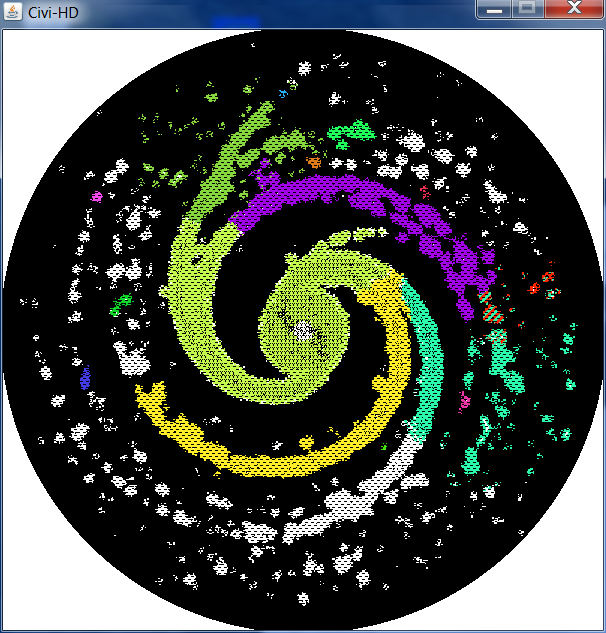

Generates planets, islands, galaxies, and more!
Home | Planet Gen | Island Gen | Civi HD | Civi in Space | Maps
What's your favorite thing about space? Mine is space. That's why I made a follow-up to Civi-HD: Civi in SPACE. Ordinary empires are replaced by galactic empires. Continents are replaced by arms of a spiral galaxy. The mechanics are largely the same, except it's in SPAAACE!
Download it here!
Civis in Civi in Space work exactly the same way as the civis in Civi HD. The primary difference is the terrain. Terrain in Civi in Space is generated onto a planar grid, where tiles are considered adjacent to anything that is within a distance of two. The first thing to generate is the core of the spiral galaxy, a simple circle of high altitude (altitude in this case represents density of stars). Next, the arms are seeded. This is done with trackers that spiral out from the center dropping bits of altitude randomly as they go. The farther from the core, the fewer altitude seeds they drop. The program starts with two, one on each side of the core, but as they go, these trackers can split up, forming multiple smaller arms, causing the galaxy to lose structure towards the edges. The arms grow in a way similar to continents, where anything with an altitude greater than the minimum (empty space) can spread altitude to nearby regions. The arms grow until about half of the map is above the star-density threshold to be considered habitable. Finally, the core of the galaxy is declared radioactive (the same mechanic that deals with nukes). No civi can settle there unless someone advances scientifically enough to clear out the radiation. Once the terrain is generated, it basically runs Civi HD on it, but in SPAAACE!